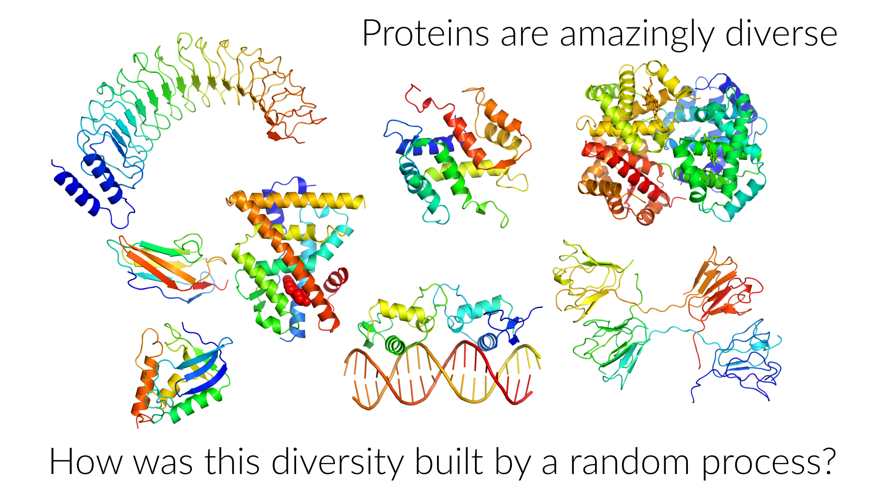

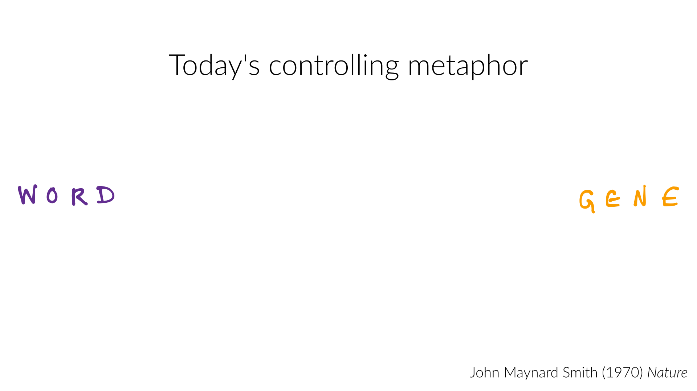
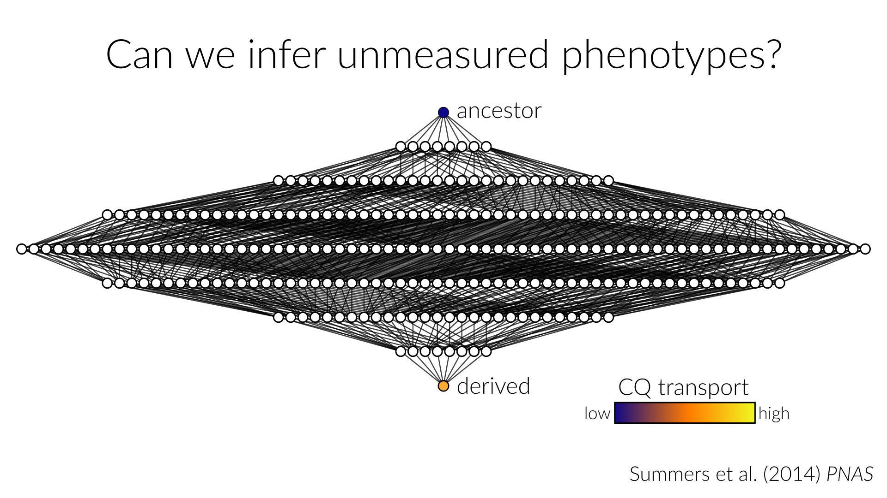

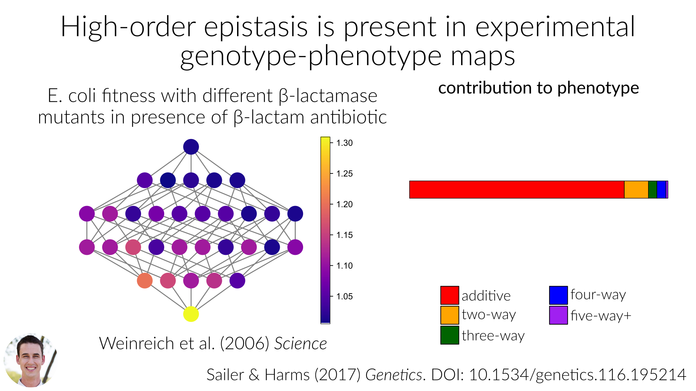
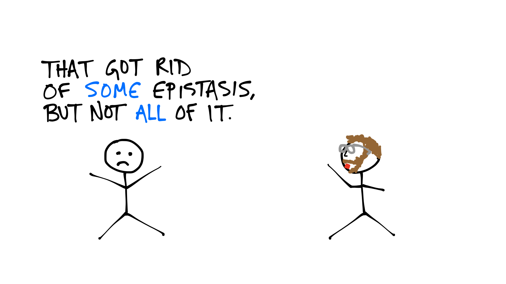


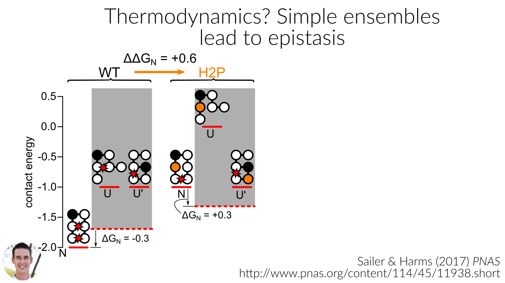
Current work:
Concluding thoughts:
- Linear epistasis models are not useful for predicting phenotypes.
- Treat epistasis as uncertainty.
- Use a mechanistic model, make epistasis go away.
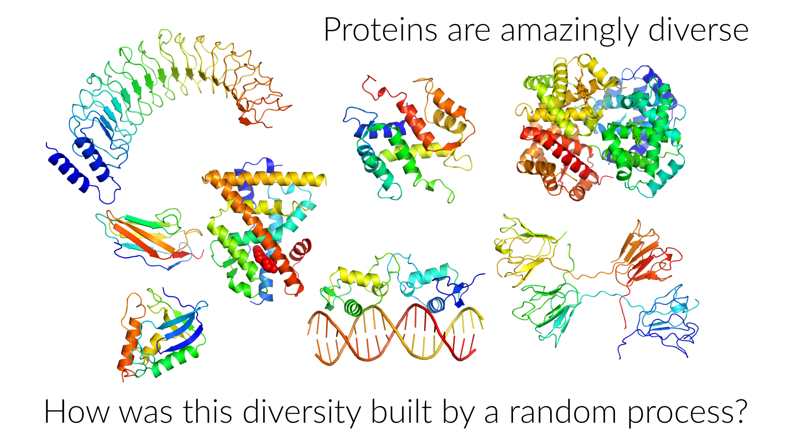
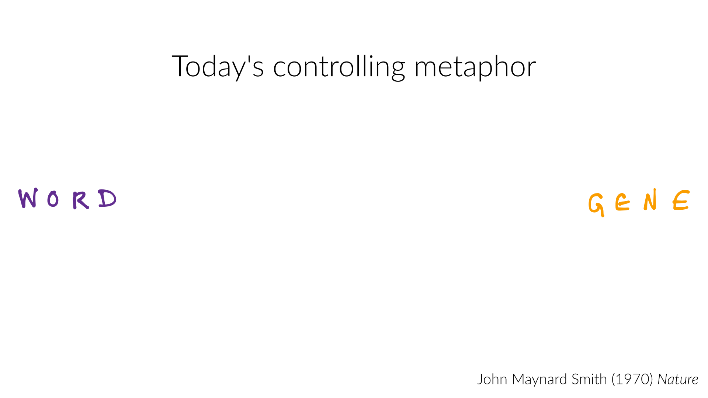
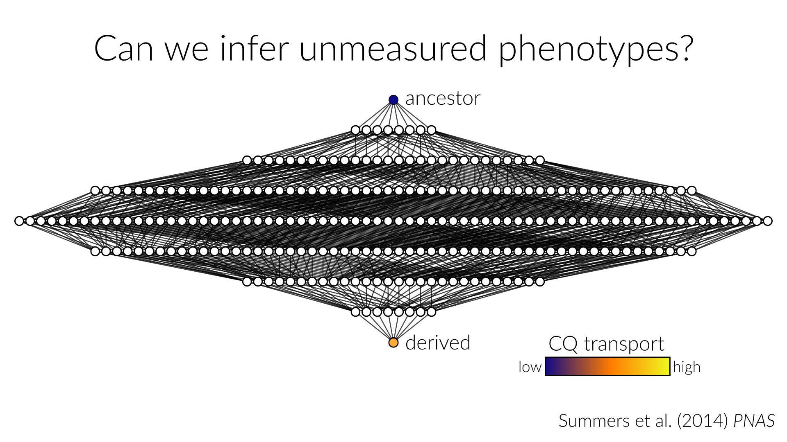
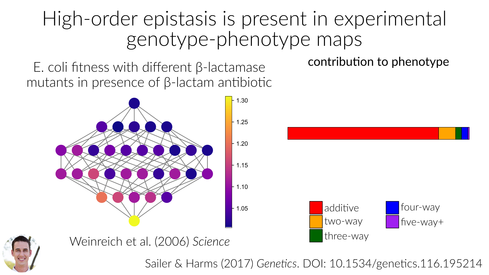
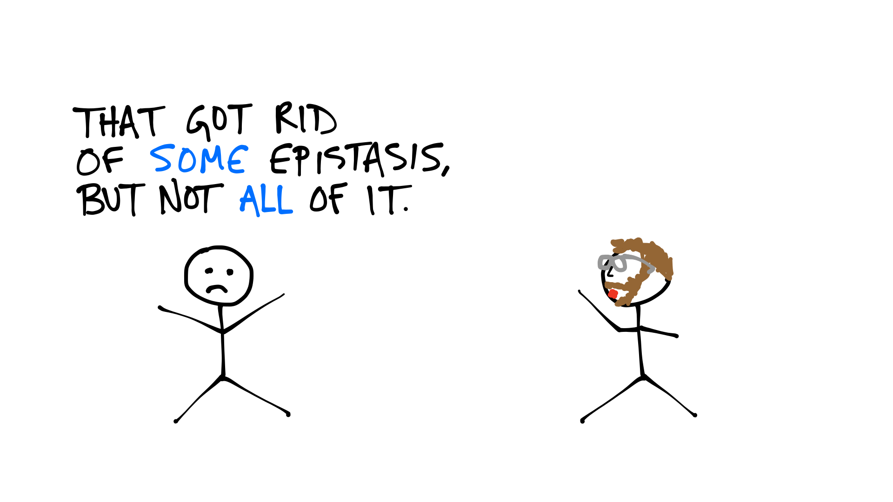
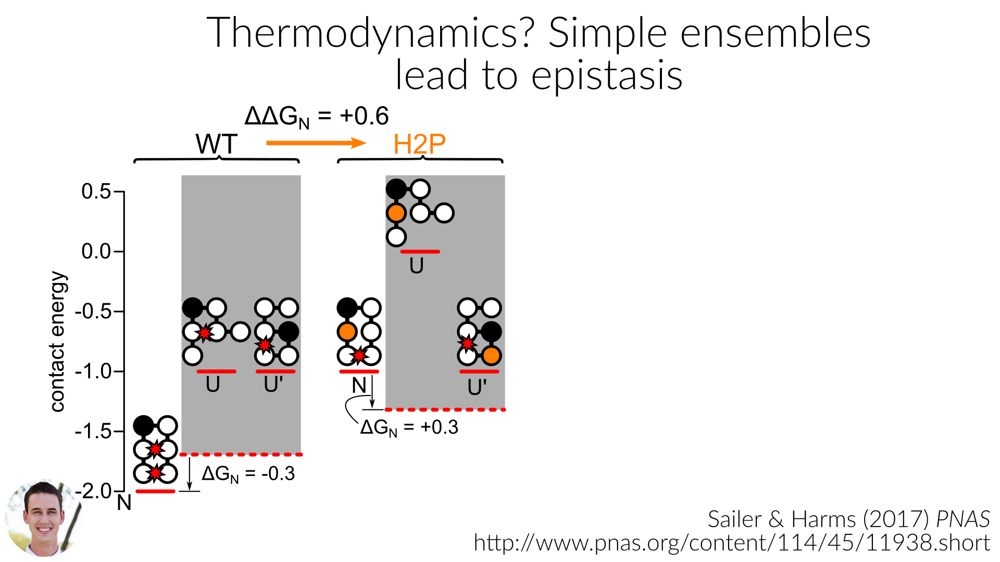
Current work:
Concluding thoughts: